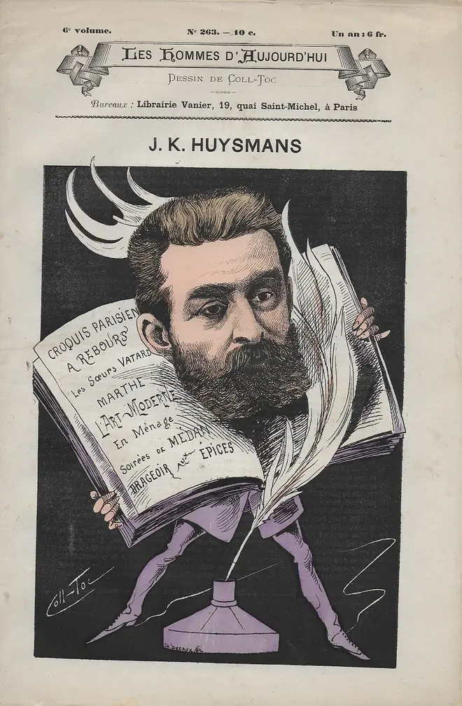

ㅤ

조리스카를 위스망스 인터뷰
조리스-카를 위스망스(Joris-Karl Huysmans)는 1848년 2월, 파리 쉬제르 거리 11번지에서 태어났다. 그 집은 지금도 남아 있는데, 초록색으로 칠해진 둥근 이중문과 큼직한 못들이 박힌 오래된 집이다. 그의 아버지 호트프리트 위스망스(Gotfried Huysmans)는 네덜란드 브레다 출신이었다. 그는 화가였고, 그의 할아버지도 화가였다. 또 지금은 헤이그에 은거한 숙부 한 사람은 오랫동안 브레다와 틸뷔르흐의 아카데미에서 회화를 가르쳤다. 이 집안은 대대로 그림을 그렸다. 선조들 가운데에는 루브르에 작품이 걸린 코르넬리위스 위스망스(Cornelius Huysmans)도 있다. 오직 마지막 후손, 곧 여기서 문제되는 이 작가만이 붓 대신 펜을 들었다. 그러나 아마 자기 혈통의 전통을 배반하지 않기 위해서였는지, 그는 틀림없이 선조들을 놀라게 했을 예술서를 한 권 썼다. 울트라마린 바탕 위에 나무의 파슬리 같은 잔잎들을 꼼꼼히 그리던 사람들인 선조들을 말이다. 피사로(Camille Pissarro)와 클로드 모네(Claude Monet)를 옹호하면서도 고전적 화가 집안의 후손이라니!
"그럼 어머니 쪽은 어떻습니까?"나는 어느 날 아침, 세브르 거리의 옛 프레몽트레 수도원에 있는 그 기묘한 거처에서 그를 인터뷰하러 갔을 때 이렇게 물었다.
"소시민 계급이지요. 외할아버지는 내무부 출납계원이었습니다. 그래도 당신이 유전적 배경에 관심이 많은 듯하니 말하자면, 외조모의 아버지는 조각가였고 로마대상 수상자였습니다. 그는 방돔 기둥 받침대의 돌출 장식에 있는 숱한 옷주름들을 만들었고, 카루젤 개선문의 이른바 소방대풍 장식에도 참여했지요. 샹젤리제 개선문의 놀라운 부조 몇 점도 아마 그가 만든 것 같습니다."
"선조의 작품을 아주 높이 평가하시는 것 같지는 않군요?"
"제라르 신부는, 제 생각엔, 그저 평범한 맹드롱 류의 인물, 막연하지만 성실한 미장장이였습니다. 그는 자기 시대 사람들보다 더 잘 조각하지도, 더 못하지도 않았지요. 사실 나는 그의 작품들에 대해 존경도 경멸도 없습니다. 그저 무관심할 뿐입니다."
나는 그가 말하는 모습을 바라보았다. 그는 내게 예의 바른 고양이 같은 인상을 주었다. 몹시 공손하고 거의 상냥하기까지 하지만, 신경질적이고 사소한 말 한마디에도 곧 발톱을 꺼낼 준비가 되어 있는 고양이 말이다. 메마르고, 야위고, 머리칼은 희끗했으며, 얼굴은 민첩하게 움직였고, 어딘가 귀찮아하는 표정이 있었다. 이것이 내가 처음 그를 보고 받은 인상이었다.
"자, 그럼," 하고 내가 본론으로 들어가며 말했다. "『거꾸로(A rebours)』의 문학적 성공에 만족하실 만하겠군요?"
"그렇습니다. 그 책은 예술가적 젊은이들 사이에서 수류탄처럼 터졌지요. 나는 열 사람을 위해 쓰고 있다고 생각했습니다. 바보들에게는 닫혀 있는 일종의 밀폐된 책, 난해한 책을 만들고 있다고 여겼던 거죠. 그런데 뜻밖에도 전 세계에 흩어져 있는 수천 명의 사람들이 나와 비슷한 정신 상태에 있다는 것이 드러났습니다. 이 치욕스러운 세기의 비열한 속물성에 환멸을 느끼고, 또 좋든 나쁘든 적어도 정직하게 만들어진 작품을 갈망하는 사람들 말입니다. 지금 프랑스에서는 위에서 아래까지, 큰 것에서 작은 것까지, 그 비참한 모방의 조급함이 만연하니까요!"
"그처럼 적지만 당신을 아끼는 독자층이 있다는 사실이 당신을 조금이라도 덜 비관적으로 만들지는 않았습니까?"
"아, 비관주의 이야기는 제발 그만둡시다. 나는 그런 문제로 인터뷰받을 만한 스위스의 오베르만 같은 인물이 아닙니다. 13번 진열대에는 임질 걸린 끄적이들을 위한 칸이 따로 있어요. 르 탕이라는 백화점에 가보십시오. 거기서는 '비관주의'라는 상품을 작은 상자에 담아 팔고 있을 겁니다."
"그렇다면 자연주의에 대해 여쭤보면 어떻습니까? 어쨌든 당신은 그 가장 열렬한 신봉자 가운데 하나로 여겨지니까요."
"나는 아주 단순하게 대답하겠습니다. 나는 내가 보는 것, 내가 사는 것, 내가 느끼는 것을 가능한 한 덜 형편없이 써낼 뿐이라고. 그것이 자연주의라면, 더없이 좋지요. 결국 재능 있는 작가와 재능 없는 작가가 있을 뿐입니다. 자연주의자든, 낭만주의자든, 데카당이든, 무슨 이름이든 내게는 다 마찬가지예요. 내게 중요한 것은 재능을 갖는 것, 그것뿐입니다!"
"그렇다 해도, 비평에 대해 그렇게 경멸을 드러내는 당신도 비평에도 좋은 점이 있다는 건 인정하시겠지요. 지금은 적어도 예전처럼 당신의 존재를 부정하지 않고, 오히려 어느 정도 존중까지 보이고 있으니까요."
여기서 위스망스는 묘한 미소를 지었다."좋은 시절은 지나갔지요." 그가 담배에 불을 붙이며 말했다. "『바타르 자매(Les Soeurs Vatard)』 시절 말입니다. 늘 가득 찬 요강이 매일 머리 위로 쏟아지던 시절 말이지요. 샤프롱은 죽었고 베롱은 입을 다물었습니다. 내 책들의 부도덕성을 두고 짖어대던 꼴을 보면, 그 친구들은 참으로 아름다운 영혼들을 지녔던 셈이지요. 아니, 요즘의 불쾌한 기사들은 그저 멍청할 뿐입니다. 기자들의 어리석음도 이제는 길들여지고, 증오도 물러졌어요!" 바로 그 순간, 멋진 붉은 고양이 한 마리가 방 안으로 들어왔다.
"오, 오!" 하고 내가 물었다. "저게 아마 『동거(En ménage)』에 나오는 그 유명한 바르 드 루이유겠군요?"
"그렇습니다."
"문인들과는 별로 어울리지 않으시는 것 같군요?"
"될 수 있는 한 적게 어울립니다. 출판사에 대한 불평, 누가 얼마를 버느냐는 이야기들은 나를 지치게 해요. 그런 되풀이를 견디지 않아도 될 때면 나는 아주 만족스럽습니다."
"한 가지 더 묻겠습니다. 『배낭을 메고(Sac au dos)』에서 들려준 전쟁 이야기는 당신 자신의 이야기였습니까?"
"물론입니다."
"그렇다면 애국심에 대한 생각은 굳이 묻지 않겠습니다."
"정말 그 얘기까지 가면 너무 멀리 나가게 되겠지요. 내가 말할 수 있는 것은 이것뿐입니다. 나는 무엇보다도 과장된 인간들을 혐오합니다. 그런데 남부 사람들은 모두 고함을 지르고, 나를 소름 끼치게 하는 억양으로 말하고, 거기에다 몸짓까지 해대지요. 아니, 머리에 곱슬곱슬한 아스트라한을 얹고 볼을 따라 흑단 울타리 같은 수염을 늘어뜨린 그런 사람들과, 크고 점잖고 과묵한 독일인들 사이에서라면 내 선택은 분명합니다. 나는 언제나 마르세유 사람보다는 라이프치히 사람에게 더 많은 친근감을 느낄 겁니다. 사실 모든 면에서 그렇습니다. 프랑스 남부만 빼고요. 내게 그보다 더 특별히 혐오스러운 종족은 없으니까요!"
나는 이런 과장된 생각을 굳이 논박하고 싶지 않았다. 그래서 『거꾸로』의 저자에게 작별을 고하고 악수를 나누었다. 그런데 그 손은 참으로 기이한 손이었다. 아주 마른 인판타의 손, 가늘고 섬세한 손가락을 지닌 손이었다. 요컨대 나의 첫인상은 옳았다. 위스망스는 분명히 자기 책들 속에 나오는 그 시큼한 인간혐오자, 그 빈혈적이고 신경질적인 존재였다. 이제 나는 그의 작품들을 간단히 훑어보려 한다.
그는 먼저 『향신료 상자(Le Drageoir aux épices)』라는 다소 평범한 산문시집으로 출발했다. 그다음 그는 창녀들을 다룬, 연대순으로는 첫 번째 소설 『마르트(Marthe)』를 썼다. 이 작품은 1876년 브뤼셀에서 출간되었고, 순결한 의도에도 불구하고 풍속 문란이라는 이유로 프랑스에서 금지되었다. 『목로주점(L'Assommoir)』이 아직 모두가 아는 그 거대한 돌파를 이루기 전의 일이었다. 『마르트』는 이후 파리에서 다시 출간되어 어느 정도 성공을 거두었다. 이 책에는 군데군데 정확한 관찰이 있고, 이미 병적인 문체의 특질도 드러난다. 그러나 내 생각에 그 언어는 공쿠르 형제를 너무 강하게 떠올리게 한다. 흥미롭고 생기 있는 데뷔작이지만, 축약되어 있고 충분히 개인적이지는 않다.
이 작가의 기이한 기질, 곧 세련된 파리지앵과 네덜란드 화가의 설명하기 힘든 혼합체를 발견하려면 『바타르 자매』에 이르러야 한다. 여기에 검은 유머 한 꼬집과 거칠고 껄끄러운 영국식 희극 감각까지 더해진 이 융합이야말로, 지금 우리가 다루는 작품들의 표지를 이룬다. 『바타르 자매』에는 아름다운 대목들이 있고, 또 1879년에 출간된 이 작품은 철도와 기관차의 풍경을 유별나게 인상적으로 묘사하면서 그것을 현대문학 안으로 처음 끌어들였다. 그것은 제본공 여자들의 삶을 잘라낸 한 조각으로서, 지저분하면서도 정확하다. 늙은 스텐의 질료를 파리지앵의 날렵하고 섬세한 손으로 다룬 것이라 할 만하다. 그러나 나로서는 그보다 『동거』를 더 좋아한다. 여전히 이 작가의 책들 가운데 내가 가장 선호하는 작품이다.
왜냐하면 그 작품은 특유의 우울의 전망들을 열어 보이고, 황폐하고 나약한 영혼들의 특별한 균열들을 드러내기 때문이다. 그것은 허무주의의 노래다. 음산한 유쾌함의 번뜩임과 맹렬한 정신의 언어 때문에 한층 더 어두워진 노래다. 논리적으로 말해, 사상으로 가득 찬 이 소설은 체념과 방임으로 귀결된다. 이는 『물 흐르는 데로(A vau-l'eau)』도 마찬가지인데, 그 작품은 마치 중간 정도의 비참함들을 위한 부제품과도 같다. 그러나 『거꾸로』에서는 분노가 모습을 드러낸다. 나른한 가면이 찢기고, 삶을 향한 저주가 행마다 불길처럼 치솟는다. 우리는 앞선 두 권의 고요하고 서글픈 철학에서 아주 멀리 와 있다. 이것은 광기이며 거품이다. 어떤 시대의 혐오와 경멸이, 모든 동시대 문학 바깥에 서 있는 이 기묘한 소설만큼 격렬하게 표현된 적은 없었다고 나는 믿는다.
내 생각에 위스망스의 책들이 지닌 큰 결함 가운데 하나는, 그의 각 작품마다 결국 하나의 동일한 유형이 중심을 차지한다는 점이다. 시프리앵 티바일(Cyprien Tibaille)과 앙드레(André), 폴랑탱(Folantin)과 데 제생트(des Esseintes)는 결국 하나의 동일한 인물일 뿐이며, 단지 서로 다른 환경 속에 옮겨졌을 뿐이다. 그리고 그 인물이 바로 위스망스 자신이라는 것은 분명히 느껴진다. 이는 자기 작품 뒤로 물러서서 그토록 다채로운 인물들을 창조해낸 플로베르(Gustave Flaubert)의 완전한 예술과는 거리가 멀다. 위스망스는 그런 노력을 할 수 없는 사람이다. 그의 냉소적이고 경직된 얼굴은 페이지마다 숨어 있다가 불쑥 모습을 드러내고, 아무리 흥미로운 인격이라 해도 하나의 성격이 계속 침입하는 것은 작품의 위대함을 감소시키며, 그 불변성 때문에 결국 독자를 지치게 만든다.
그의 문체에 대해서는 여기서 말하지 않겠다. 앙느캥(Hennequin)의 매우 적절한 글에서 이미 다 논해졌기 때문이다. 그의 몇몇 페이지는 오래도록 명성을 지닐 만한 장엄함을 갖고 있다. 그러나 비평이 대체로 못 본 체해온 또 다른 점이 있다. 그것은 심리 분석, 그리고 그의 인물들, 아니 정확히 말하면 그의 단 하나의 인물이다. 앞서 말했듯 결국 하나뿐이다. 의지가 약하고, 불안하며, 스스로를 괴롭히는 데 능하고, 추론에 기울며, 자기 안을 충분히 멀리까지 들여다볼 수 있어서 자기 병의 체질적 성향 자체를 설명하고 그것을 웅변적이면서도 정확한 문장들로 요약해낼 수 있는 인물 말이다. 바로 이 인물 분석 속에 작가의 독창성 가운데 하나가 놓여 있다. 내 생각에 그것은 그의 문체의 독창성과 맞먹는다. 『동거』 속 「치마의 위기(La Crise juponnière)」를 읽어보라. 이처럼 미세한 영혼의 구역은 그 이전까지 누구도 언뜻 본 적이 없었다는 점을 생각해보라. 그 위기에 대한 모노그래프가 얼마나 정확한지, 또 얼마나 학문적 명석함으로 그것을 우리에게 보여주는지. 또 한편으로 『거꾸로』의 빼어난 한 장, 어린 시절의 기억과 기막히게 설명된 신학적 회귀를 다룬 장을 읽어보라. 이 영혼의 영적 지하실에 대한 탐사가 과연 절대적으로 심오하고 절대적으로 새로운 것이 아니겠는가.
이 작품들 외에도 위스망스는 『파리 풍경 스케치(Croquis parisiens)』를 출간했다. 그는 알로이시위스 베르트랑(Aloysius Bertrand)과 샤를 보들레르(Charles Baudelaire) 이후 산문시를 하나의 형식으로 다듬으려 시도했다. 그는 기묘한 기교들을 동원하여 그것을 어느 정도 새롭게 하고 젊게 만들었다. 자유시를 후렴처럼 사용하고, 리듬감 있고 반복적이며 기이한 문장을 시의 앞과 뒤에 붙였고, 때로는 빌롱(Villon)과 데샹(Deschamps)의 발라드처럼 일종의 리토르넬로나 분리된 마지막 송부문 같은 것까지 부여했다. 그는 또 『현대 예술(L'Art moderne)』이라는 책에 묶인 살롱 비평들을 썼는데, 이 책은 인상주의자들을 진지하게 설명하고 드가(Degas)에게 장차 그가 차지하게 될 높은 자리를 부여한 최초의 책이다. 또 위스망스는 아무도 그 화가를 주목하지 않던 때 라파엘리(Raffaëlli)를 세상에 처음 알린 인물이기도 하고, 오딜롱 르동(Odilon Redon)을 설명하고 세상에 밀어 올린 첫 번째 인물이기도 하다. 예술의 가장 다양한 현현들 속에서 이토록 예민한 후각과 이해력을 지닌 미술비평가가 또 어디 있는가.
요컨대, 언젠가 정의라는 것이 존재한다면, 속된 대중에게 그토록 경멸받아온 위스망스의 몫은 결코 작지 않을 것이다. 다만 나 자신은 그의 신념들을 그다지 많이 공유하지는 않는다. 개인적으로 나는 좀 더 건강한 문학, 아마 덜 눈부실지는 몰라도 덜 무성한 문체를 믿는다. 심리 분석에서도 나는 더 일반적이고 더 넓고 덜 희귀한 측면을 믿는다. 그런 점에서 발자크(Honoré de Balzac)는 내게 대가로 보인다. 그는 부성애와 인색함처럼 인간 존재의 크고 보편적인 정념들을 놀랍도록 정확하게 해부해냈다. 내가 위스망스를 진정한 작가가 거의 없는 한 세기에서 매우 높은 자리에 놓는다 하더라도, 나는 그를 예외적 존재, 기이하고 병약한 작가, 변덕스럽고 대담하며 손끝까지 예술가인 인물로 보지 않을 수 없다. 또 멀고 긴장되고 푸른 형용사들과, 고독하고 당혹스러운 관념들을 지닌 또 다른 기이한 작가 레옹 블루아(Léon Bloy)의 표현을 빌리자면, 그는 "겁에 질린 통사론의 좀먹은 계단 위로 이미지를 머리채로, 혹은 발목으로 끌고 다니는" 작가다. 그러나 이러한 모든 것이 아무리 감탄을 불러일으킨다 해도, 내게는 걸작들을 불침투적이고 결정적인 것으로 만들어주는 그 사유와 문체의 아름다운 건강성을 이루는 것처럼 보이지는 않는다.